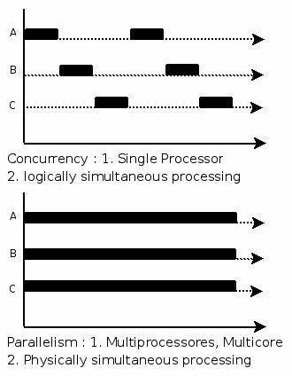
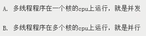
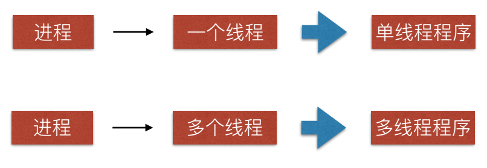
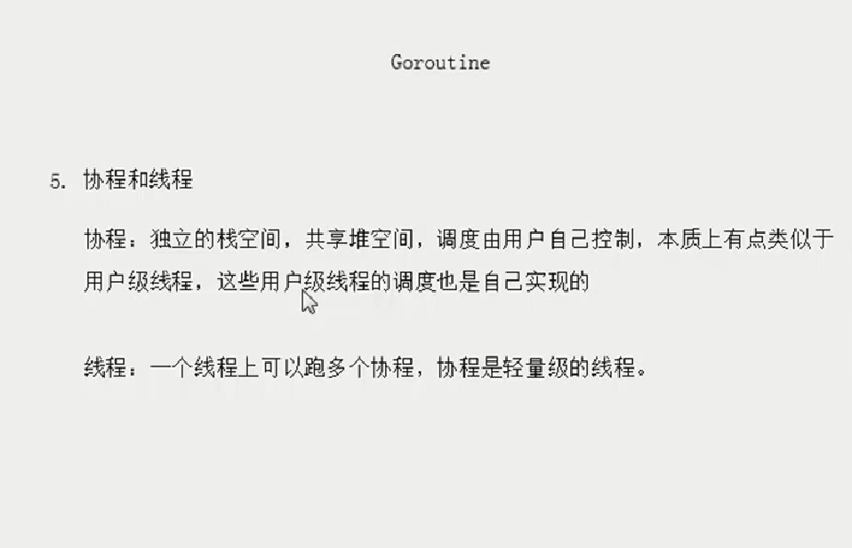

原文连接:https://www.cnblogs.com/X-knight/p/11363730.html
一、goroutine简介
Golang被极度赞扬的是它的异步机制，也就是goroutine。goroutine使用方式非常的简单，只需使用go关键字即可启动一个协程, 并且它是处于异步方式运行，你不需要等它运行完成以后再执行以后的代码。
go func()//通过go关键字启动一个协程来运行函数除去语法上的简洁，goroutine是一个协程，也就是比线程更节省资源，一个线程中可以有多个协程，而且goroutine被分配到多个CPU上运行，是真正意义上的并发。
go func()//通过go关键字启动一个协程来运行函数二、goroutine内部原理
在介绍goroutine原理之前，先对一些关键概念进行介绍：
关键概念
并发
一个cpu上能同时执行多项任务，在很短时间内，cpu来回切换任务执行(在某段很短时间内执行程序a，然后又迅速得切换到程序b去执行)，有时间上的重叠（宏观上是同时的，微观仍是顺序执行）,这样看起来多个任务像是同时执行，这就是并发。
并行
当系统有多个CPU时,每个CPU同一时刻都运行任务，互不抢占自己所在的CPU资源，同时进行，称为并行。

简单理解
你吃饭吃到一半，电话来了，你一直到吃完了以后才去接，这就说明你不支持并发也不支持并行。
你吃饭吃到一半，电话来了，你停了下来接了电话，接完后继续吃饭，这说明你支持并发。
你吃饭吃到一半，电话来了，你一边打电话一边吃饭，这说明你支持并行。并发的关键是你有处理多个任务的能力，不一定要同时。
并行的关键是你有同时处理多个任务的能力。在计算机中就是：

所以我认为它们最关键的点就是：是否是『同时』。
进程
cpu在切换程序的时候，如果不保存上一个程序的状态（也就是我们常说的context--上下文），直接切换下一个程序，就会丢失上一个程序的一系列状态，于是引入了进程这个概念，用以划分好程序运行时所需要的资源。
因此进程就是一个程序运行时候的所需要的基本资源单位（也可以说是程序运行的一个实体）。
线程
cpu切换多个进程的时候，会花费不少的时间，因为切换进程需要切换到内核态，而每次调度需要内核态都需要读取用户态的数据，进程一旦多起来，cpu调度会消耗一大堆资源，因此引入了线程的概念，线程本身几乎不占有资源，他们共享进程里的资源，内核调度起来不会那么像进程切换那么耗费资源。
线程是进程的一个执行实体，是CPU调度和分派的基本单位，它是比进程更小的能独立运行的基本单位。

NOTE：线程包括三大类，而且goroutine也并非真正地协程。（请查看:《线程那些事儿》）
有时候为了方便理解可以简单把goroutine类比成协程，但心里一定要有个清晰的认知 — goroutine并不等同于协程。
协程
协程拥有自己的寄存器上下文和栈。协程调度切换时，将寄存器上下文和栈保存到其他地方，在切回来的时候，恢复先前保存的寄存器上下文和栈。因此，协程能保留上一次调用时的状态（即所有局部状态的一个特定组合），每次过程重入时，就相当于进入上一次调用的状态，换种说法：进入上一次离开时所处逻辑流的位置。线程和进程的操作是由程序触发系统接口，最后的执行者是系统；协程的操作执行者则是用户自身程序，goroutine也是协程。

G-P-M调度模型简介
groutine能拥有强大的并发实现是通过GPM调度模型实现，下面就来解释下goroutine的调度模型。
M:M代表内核级线程，一个M就是一个线程，goroutine就是跑在M之上的；M是一个很大的结构，里面维护小对象内存cache（mcache）、当前执行的goroutine、随机数发生器等等非常多的信息
G:代表一个goroutine，它有自己的栈，instruction pointer和其他信息（正在等待的channel等等），用于调度。
P:P全称是Processor，处理器，它的主要用途就是用来执行goroutine的，所以它也维护了一个goroutine队列，里面存储了所有需要它来执行的goroutine
NOTE：G-P-M模型详解，请查看该篇博文。
调度实现

P的数量可以通过GOMAXPROCS()来设置，它其实也就代表了真正的并发度，即有多少个goroutine可以同时运行。
图中灰色的那些goroutine并没有运行，而是出于ready的就绪态，正在等待被调度。P维护着这个队列（称之为runqueue），
Go语言里，启动一个goroutine很容易：go function 就行，所以每有一个go语句被执行，runqueue队列就在其末尾加入一个
goroutine，在下一个调度点，就从runqueue中取出（如何决定取哪个goroutine？）一个goroutine执行。
当一个OS线程M0陷入阻塞时（如下图)，P转而在运行M1，图中的M1可能是正被创建，或者从线程缓存中取出。

如果没有拿到的话，它就把goroutine放在一个global runqueue里，然后自己睡眠（放入线程缓存里）。所有的P也会周期性的检查global runqueue并运行其中的goroutine，否则global runqueue上的goroutine永远无法执行。

三、使用goroutine
基本使用
设置goroutine运行的CPU数量，最新版本的go已经默认已经设置了。
num := runtime.NumCPU() //获取主机的逻辑CPU个数
runtime.GOMAXPROCS(num) //设置可同时执行的最大CPU数使用示例


package main
import (
"fmt"
"time"
)
func cal(a int , b int ) {
c := a+b
fmt.Printf("%d + %d = %d\n",a,b,c)
}
func main() {
for i :=0 ; i<10 ;i++{
go cal(i,i+1) //启动10个goroutine 来计算
}
time.Sleep(time.Second * 2) // sleep作用是为了等待所有任务完成
}
//结果
//8 + 9 = 17
//9 + 10 = 19
//4 + 5 = 9
//5 + 6 = 11
//0 + 1 = 1
//1 + 2 = 3
//2 + 3 = 5
//3 + 4 = 7
//7 + 8 = 15
//6 + 7 = 13
goroutine异常捕捉
当启动多个goroutine时，如果其中一个goroutine异常了，并且我们并没有对进行异常处理，那么整个程序都会终止，所以我们在编写程序时候最好每个goroutine所运行的函数都做异常处理，异常处理采用recover
package main
import (
"fmt"
"time"
)
func addele(a []int ,i int) {
defer func() { //匿名函数捕获错误
err := recover()
if err != nil {
fmt.Println("add ele fail")
}
}()
a[i]=i
fmt.Println(a)
}
func main() {
Arry := make([]int,4)
for i :=0 ; i<10 ;i++{
go addele(Arry,i)
}
time.Sleep(time.Second * 2)
}
//结果
add ele fail
[0 0 0 0]
[0 1 0 0]
[0 1 2 0]
[0 1 2 3]
add ele fail
add ele fail
add ele fail
add ele fail
add ele fail
同步的goroutine
由于goroutine是异步执行的，那很有可能出现主程序退出时还有goroutine没有执行完，此时goroutine也会跟着退出。此时如果想等到所有goroutine任务执行完毕才退出，go提供了sync包和channel来解决同步问题，当然如果你能预测每个goroutine执行的时间，你还可以通过time.Sleep方式等待所有的groutine执行完成以后在退出程序(如上面的列子)。
package main
import (
"fmt"
"sync"
)
func cal(a int , b int ,n *sync.WaitGroup) {
c := a+b
fmt.Printf("%d + %d = %d\n",a,b,c)
defer n.Done() //goroutinue完成后, WaitGroup的计数-1
}
func main() {
var go_sync sync.WaitGroup //声明一个WaitGroup变量
for i :=0 ; i<10 ;i++{
go_sync.Add(1) // WaitGroup的计数加1
go cal(i,i+1,&go_sync)
}
go_sync.Wait() //等待所有goroutine执行完毕
}
//结果
9 + 10 = 19
2 + 3 = 5
3 + 4 = 7
4 + 5 = 9
5 + 6 = 11
1 + 2 = 3
6 + 7 = 13
7 + 8 = 15
0 + 1 = 1
8 + 9 = 17
示例二：通过channel实现goroutine之间的同步。
实现方式：通过channel能在多个groutine之间通讯，当一个goroutine完成时候向channel发送退出信号,等所有goroutine退出时候，利用for循环channe去channel中的信号，若取不到数据会阻塞原理，等待所有goroutine执行完毕，使用该方法有个前提是你已经知道了你启动了多少个goroutine。
package main
import (
"fmt"
"time"
)
func cal(a int , b int ,Exitchan chan bool) {
c := a+b
fmt.Printf("%d + %d = %d\n",a,b,c)
time.Sleep(time.Second*2)
Exitchan <- true
}
func main() {
Exitchan := make(chan bool,10) //声明并分配管道内存
for i :=0 ; i<10 ;i++{
go cal(i,i+1,Exitchan)
}
for j :=0; j<10; j++{
<- Exitchan //取信号数据，如果取不到则会阻塞
}
close(Exitchan) // 关闭管道
}goroutine之间的通讯
goroutine本质上是协程，可以理解为不受内核调度，而受go调度器管理的线程。goroutine之间可以通过channel进行通信或者说是数据共享，当然你也可以使用全局变量来进行数据共享。
示例：使用channel模拟消费者和生产者模式
package main
import (
"fmt"
"sync"
)
func Productor(mychan chan int,data int,wait *sync.WaitGroup) {
mychan <- data
fmt.Println("product data：",data)
wait.Done()
}
func Consumer(mychan chan int,wait *sync.WaitGroup) {
a := <- mychan
fmt.Println("consumer data：",a)
wait.Done()
}
func main() {
datachan := make(chan int, 100) //通讯数据管道
var wg sync.WaitGroup
for i := 0; i < 10; i++ {
go Productor(datachan, i,&wg) //生产数据
wg.Add(1)
}
for j := 0; j < 10; j++ {
go Consumer(datachan,&wg) //消费数据
wg.Add(1)
}
wg.Wait()
}
//结果
consumer data： 4
product data： 5
product data： 6
product data： 7
product data： 8
product data： 9
consumer data： 1
consumer data： 5
consumer data： 6
consumer data： 7
consumer data： 8
consumer data： 9
product data： 2
consumer data： 2
product data： 3
consumer data： 3
product data： 4
consumer data： 0
product data： 0
product data： 1四、channel
不同goroutine之间是如何进行通讯的呢？
- 方法一：全局变量和锁同步
- 方法二：Channel
这里我们主要注重讲解下go中特有的channel，其类似于UNIX中的管道（piple）。
channel概念
channel俗称管道，用于数据传递或数据共享，其本质是一个先进先出的队列，使用goroutine+channel进行数据通讯简单高效，同时也线程安全，多个goroutine可同时修改一个channel，不需要加锁。
channel操作
定义和声明:
1 var 变量名 chan 类型 //channel是有类型的，一个整数的channel只能存放整数
2
3 var test chan int
4
5 var test chan map[string]string
6
7 var test chan *stuchannel可分为三种：
只读channel：只能读channel里面数据，不可写入
只写channel：只能写数据，不可读
一般channel：可读可写

var readOnlyChan <-chan int // 只读chan
var writeOnlyChan chan<- int // 只写chan
var mychan chan int //读写channel
mychannel = make(chan int,10)
//或者
read_only := make (<-chan int,10)//定义只读的channel
write_only := make (chan<- int,10)//定义只写的channel
read_write := make (chan int,10)//可同时读写定义完成以后需要make来分配内存空间，不然会deadlock!

//定义一个结构体类型的channel
package main
type student struct{
name string
}
func main() {
var stuChan chan student
stuChan = make(chan student, 10)
stu := student{name:"syu01"}
stuChan <- stu
}
读写数据
ch <- "wd" //写数据
a := <- ch //读取数据
a, ok := <-ch //推荐的读取数据方法注意：
- 管道如果未关闭，在读取超时会则会引发deadlock异常
- 管道如果关闭进行写入数据会pannic
- 当管道中没有数据时候再行读取或读取到默认值，如int类型默认值是0
遍历管道
- 使用for range遍历管道，如果管道未关闭会引发deadlock错误。
- 如果采用for死循环已经关闭的管道，当管道没有数据时候，读取的数据会是管道的默认值，并且循环不会退出。
package main
import (
"fmt"
"time"
)
func main() {
mychannel := make(chan int,10)
for i := 0;i < 10;i++{
mychannel <- i
}
close(mychannel) //关闭管道
fmt.Println("data lenght: ",len(mychannel))
for v := range mychannel { //遍历管道
fmt.Println(v)
}
fmt.Printf("data lenght: %d",len(mychannel))
}带缓冲区channe和不带缓冲区channel
带缓冲区channel：定义声明时候制定了缓冲区大小(长度)，可以保存多个数据。
不带缓冲区channel：只能存一个数据，并且只有当该数据被取出时候才能存下一个数据。
ch := make(chan int) //不带缓冲区
ch := make(chan int ,10) //带缓冲区不带缓冲区示例：
package main
import "fmt"
func test(c chan int) {
for i := 0; i < 10; i++ {
fmt.Println("send ", i)
c <- i
}
}
func main() {
ch := make(chan int)
go test(ch)
for j := 0; j < 10; j++ {
fmt.Println("get ", <-ch)
}
}
//结果：
send 0
send 1
get 0
get 1
send 2
send 3
get 2
get 3
send 4
send 5
get 4
get 5
send 6
send 7
get 6
get 7
send 8
send 9
get 8
get 9channel实现作业池
我们创建三个channel，一个channel用于接受任务，一个channel用于保持结果，还有个channel用于决定程序退出的时候。
package main
import (
"fmt"
)
func Task(taskch, resch chan int, exitch chan bool) {
defer func() { //异常处理
err := recover()
if err != nil {
fmt.Println("do task error：", err)
return
}
}()
for t := range taskch { // 处理任务
fmt.Println("do task :", t)
resch <- t //
}
exitch <- true //处理完发送退出信号
}
func main() {
taskch := make(chan int, 20) //任务管道
resch := make(chan int, 20) //结果管道
exitch := make(chan bool, 5) //退出管道
go func() {
for i := 0; i < 10; i++ {
taskch <- i
}
close(taskch)
}()
for i := 0; i < 5; i++ { //启动5个goroutine做任务
go Task(taskch, resch, exitch)
}
go func() { //等5个goroutine结束
for i := 0; i < 5; i++ {
<-exitch
}
close(resch) //任务处理完成关闭结果管道，不然range报错
close(exitch) //关闭退出管道
}()
for res := range resch{ //打印结果
fmt.Println("task res：",res)
}
}只读channel和只写channel
一般定义只读和只写的管道意义不大，更多时候我们可以在参数传递时候指明管道可读还是可写，即使当前管道是可读写的。
package main
import (
"fmt"
"time"
)
//只能向chan里写数据
func send(c chan<- int) {
for i := 0; i < 10; i++ {
c <- i
}
}
//只能取channel中的数据
func get(c <-chan int) {
for i := range c {
fmt.Println(i)
}
}
func main() {
c := make(chan int)
go send(c)
go get(c)
time.Sleep(time.Second*1)
}
//结果
0
1
2
3
4
5
6
7
8
9select-case实现非阻塞channel
原理通过select+case加入一组管道，当满足（这里说的满足意思是有数据可读或者可写)select中的某个case时候，那么该case返回，若都不满足case，则走default分支。
package main
import (
"fmt"
)
func send(c chan int) {
for i :=1 ; i<10 ;i++ {
c <-i
fmt.Println("send data : ",i)
}
}
func main() {
resch := make(chan int,20)
strch := make(chan string,10)
go send(resch)
strch <- "wd"
select {
case a := <-resch:
fmt.Println("get data : ", a)
case b := <-strch:
fmt.Println("get data : ", b)
default:
fmt.Println("no channel actvie")
}
}
//结果：get data : wdchannel中定时器的使用
在对channel进行读写的时，可以对读写进行频率控制，通过time.Ticke实现
示例：
package main
import (
"time"
"fmt"
)
func main(){
requests:= make(chan int ,5)
for i:=1;i<5;i++{
requests<-i
}
close(requests)
limiter := time.Tick(time.Second*1)
for req:=range requests{
<-limiter
fmt.Println("requets",req,time.Now()) //执行到这里，需要隔1秒才继续往下执行，time.Tick(timer)上面已定义
}
}
//结果：
requets 1 2018-07-06 10:17:35.98056403 +0800 CST m=+1.004248763
requets 2 2018-07-06 10:17:36.978123472 +0800 CST m=+2.001798205
requets 3 2018-07-06 10:17:37.980869517 +0800 CST m=+3.004544250
requets 4 2018-07-06 10:17:38.976868836 +0800 CST m=+4.000533569